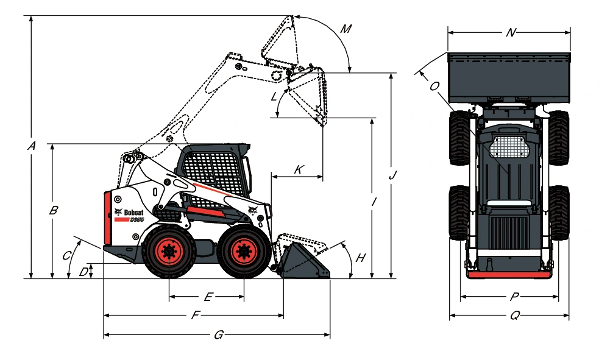

BOBCAT / Movimiento de tierras
S650
Minicargador Bobcat S650 con motor diésel D24, capacidad nominal estipulada de 1253 kg y sistema hidráulico de 87.10 L/min. La ficha describe transmisión hidrostática, bastidor Bob-Tach y sistema de bloqueo interfuncional BICS.
1253kg de capacidad nominal
56.0kW a 2600 r.p.m.
3657kg de peso operativo
Flota confirmada · disponibilidad para tus fechas: consultar
Cotizar este equipo
↓ Descargar ficha técnica (PDF, abre en otra pestaña)
PDF suministrado · 1 páginas
CONOCE EL PRODUCTO
Información
técnica.
Datos del documento suministrado. Se conservan las unidades y las alternativas de la fuente.
← Volver a Movimiento de tierras| Capacidad nominal estipulada (ISO 14397-1) | 1253 kg |
|---|---|
| Carga de vuelco | 2507 kg |
| Capacidad de la bomba | 87.10 L/min |
| Capacidad con alto caudal opcional | 115.50 L/min |
| Alivio en acopladores rápidos | 23.8-24.5 MPa |
| Velocidad máxima, primera velocidad | 11.4 km/h |
| Marca / modelo | Bobcat/D24 |
|---|---|
| Cumplimiento indicado | 97/68 CE Fase IIIB |
| Combustible | Diésel |
| Refrigeración | Líquida |
| Potencia SAE J1995 a 2600 r.p.m. | 56.0 kW |
| Par SAE J1995 bruto a 1800 r.p.m. | 283.9 Nm |
| Cilindros | 4 |
| Cilindrada | 2392 cm3 |
| Depósito de combustible | 90.50 L |
| Peso operativo | 3657 kg |
| Peso de envío | 3344 kg |
| Dirección y velocidad | Dos palancas manuales |
|---|---|
| Elevación e inclinación | Pedales; ACS opcional o controles SJC independientes |
| Auxiliar delantero estándar | Interruptor eléctrico en palanca manual derecha |
| Transmisión | Bombas de pistones hidrostáticos en tándem infinitamente variables, con dos motores hidrostáticos completamente reversibles |
| Puesto del operador | Asiento ajustable con suspensión y respaldo largo; cabina Deluxe con ventanillas; instrumentación; barra de asiento; cinturón de seguridad |
|---|---|
| Sistema hidráulico y acople | Caudal variable/máximo; Bob-Tach; auxiliar delantero proporcional eléctrico; autonivelación de cuchara con selección de encendido/apagado |
| Protección y operación | BICS; parada de hidráulico/motor; soporte de brazos; freno de estacionamiento; luces delanteras/traseras; bujías automáticas; turbocompresor con apagachispas |
| Neumáticos de serie | 12 x 16,5, 12 lonas, para tareas duras |
| ROPS | SAE-J1040 e ISO 3471 |
| FOPS nivel I | SAE-J1043 e ISO 3449 |
| Certificación indicada | CE |
| Transmisión y acople | Dos velocidades; alto caudal; Bob-Tach hidráulico |
|---|---|
| Cabina y confort | Tablero Deluxe; cabina cerrada con calefacción; aire acondicionado; asientos neumáticos y cinturón de 2 o 3 puntos |
| Controles opcionales | Sistema de control avanzado ACS; controles de joystick seleccionables SJC |
| Neumáticos opcionales | 33 x 15.5-16,5 de superflotación; 12 x 16,5 para tareas o condiciones duras con distintas llantas, Poly Fill o Solid Flex |
| Otros opcionales | Alarma de marcha atrás; girofaro; calentador de bloque; extintor; luz estroboscópica |
| Operador LpA (98/37 y 474-1) | 85 dB(A) |
|---|---|
| Ruido LWA, Directiva UE 2000/14/CE | 101 dB(A) |
| Vibración de cuerpo completo, ISO 2631–1 | 0.90 ms-2 |
| Vibración mano/brazo, ISO 5349–1 | 1.40 ms-2 |

| A | 4026.0 mm |
|---|---|
| B | 2065.0 mm |
| C | 25.0 ° |
| D | 207.0 mm |
| E | 1150.0 mm |
| F | 2754.0 mm |
| G | 3474.0 mm |
| H | 30.0 ° |
| I | 2447.0 mm |
| J | 3149.0 mm |
| K | 800.0 mm |
| L | 42.0 ° |
| M | 97.0 ° |
| N | 1880.0 mm |
| O | 2106.0 mm |
| P | 1507.0 mm |
| Q | 1832.0 mm |
¿ES EL PRODUCTO QUE NECESITAS?